Pterodactylus
Quái Điểu kỷ Jura
Tổng quan
Kỷ
Jurassic
Họ
Pterodactylidae
Chi
Pterodactylus
Dài
1 m
Sải cánh
2 m
Nặng
4.5 kg
Thức ăn
 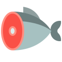
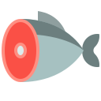

Pterodactylus là một chi thằn lằn có cánh. Pterodactylus hiện chỉ gồm một loài duy nhất, Pterodactylus antiquus, đây là loài đầu tiên được đặt tên và được xác định như một loài bò sát bay.
Nguồn: wikipedia.org
Phân bố
Khu vực Châu phi và Châu Âu
Thông tin thêm về Pterodactylus
Kỷ nguyên
Pterodactylus tồn tại từ lâu trong kỷ nguyên Mesozoi. Nếu chúng ta nói cụ thể, thì chúng được tìm thấy vào thời kỳ cuối kỷ Jura (đầu Tithonia), khoảng 150,8-148,5 triệu năm trước.
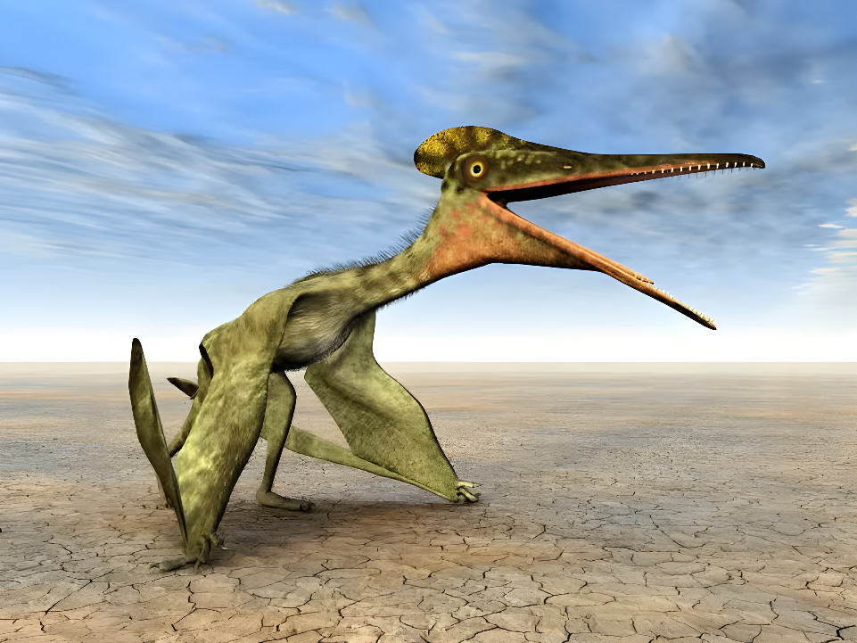Phân bố
Loài Pterodactylus sớm nhất được biết là tồn tại ở Ý. Bên cạnh đó, hóa thạch của chúng được tìm thấy chủ yếu trong đá vôi Solnhofen Bavaria, Đức. Được biết là có khả năng bay và khả năng đẻ trứng, chúng được cho là đã làm tổ ở nhiều ngọn núi gần biển và lang thang trên bầu trời Châu Âu và Châu Phi.
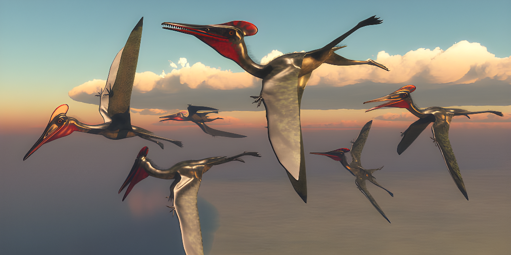Tên khoa học
Tên gọi của chi này xuất phát từ tiếng Hy Lạp pteron (πτερόν, có nghĩa là 'cánh') và daktylos (δάκτυλος, có nghĩa là 'ngón tay'). Dịch ra là "Ngón tay có cánh" dựa trên đặc điểm nhận dạng của loài với sự phát triển đột biến của ngón tay thứ 4.
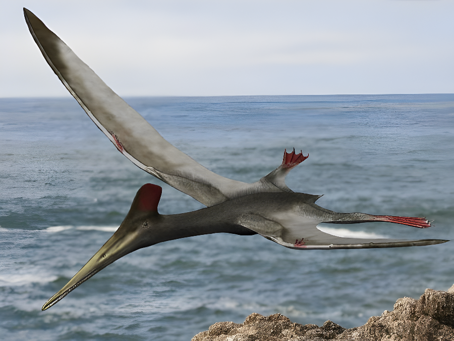Kích thước
Pterodactylus là một loài dực long có kích thước tương đối nhỏ với chiều dài cơ thể khoảng 1 mét, sải cánh khi trưởng thành ước tính khoảng từ 1.04 đến 2 m và nặng khoảng 4.5 kg.
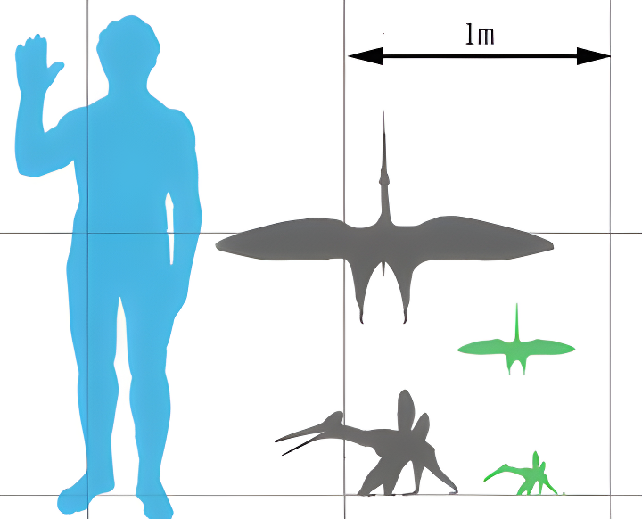Ngoại hình
Cái tên "Ngón tay có cánh" của Pterodactylus cũng có lý do của nó. Ngón tay thứ 4 của loài này có chiều dài gần như tương tự với cơ thể của chúng và là nơi nối màng cánh và màng tế bào cơ kéo dài từ ngón tay thứ tư kéo dài đến chân sau, đôi cánh có tác dụng vỗ và hỗ trợ lực đẩy khi nảy, còn khi di chuyển dưới mặt đất, ngón tay này hoàn toàn được gập gọn lên, điều này khiến chúng sẽ có dáng đi vô cùng kì lạ khi di chuyển dưới mặt đất.
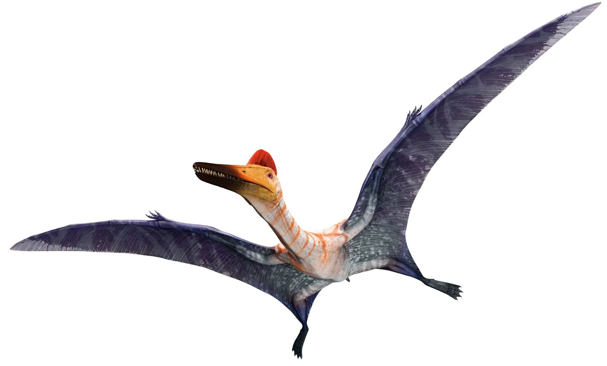Bộ hàm rất đẹp, hơi hẹp và dài gần giống bồ nông, với khoảng 90 chiếc răng ngắn, nhọn. Phía trên đầu có chiếc mào bằng da tròn dẹp. Chúng có thân hình nhỏ gọn và không có lông. Tuy nhiên, xương của chúng cũng rỗng như bạn thấy ở các loài chim ngày nay. Đuôi của chúng khá nhỏ hoặc hoàn toàn không có, không giống như các loài bò sát được tìm thấy ngày nay.
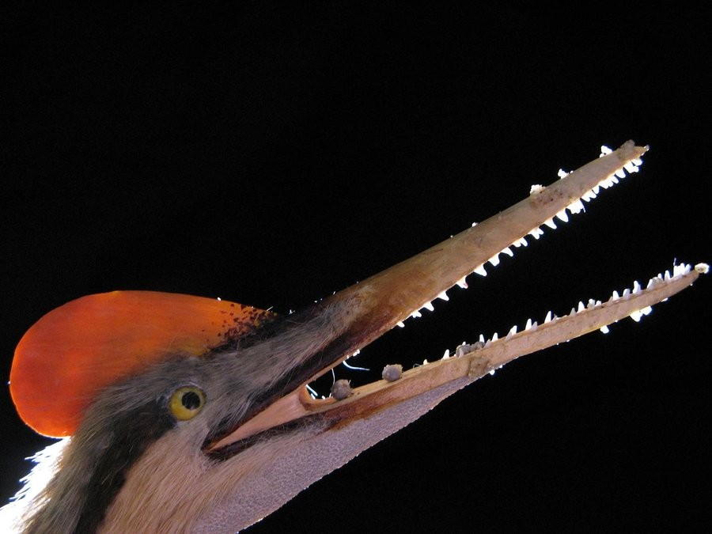Chế độ ăn và săn mồi
Xem xét thực tế là Pterodactylus có răng nhọn, mõm dài và hàm hẹp, chúng giống với bản chất của động vật ăn thịt, chủ yếu là những động vật nhỏ, cá và côn trùng.
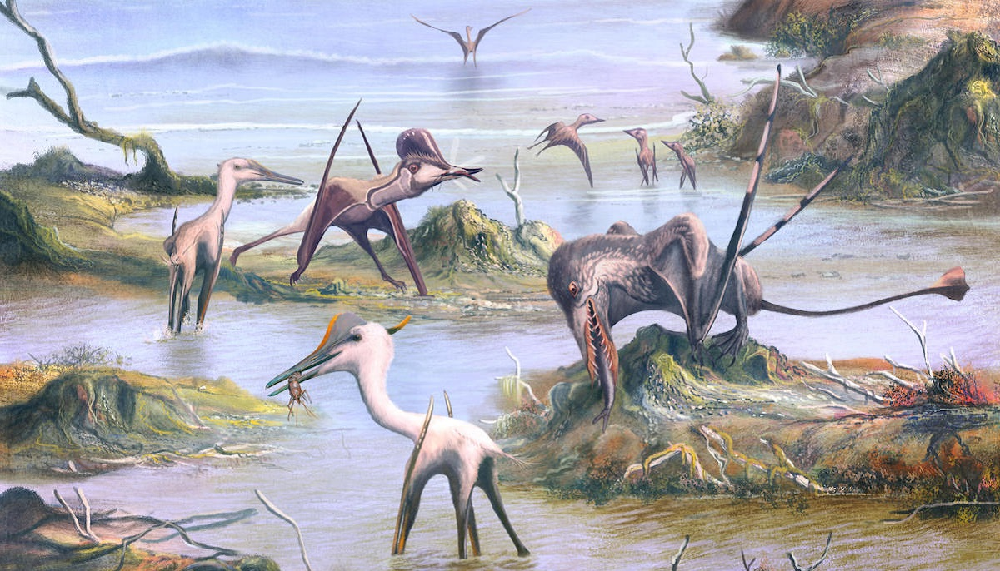Năm 1973 tại Ý, một hóa thạch Pterodactylus được tìm thấy với vảy cá ở bụng. Điều này được sử dụng để gợi ý rằng con thú khổng lồ đã bay trên biển rộng để tìm kiếm con mồi. Chúng ăn cá bằng cách săn bắt chúng như loài bồ nông làm bằng mõm.
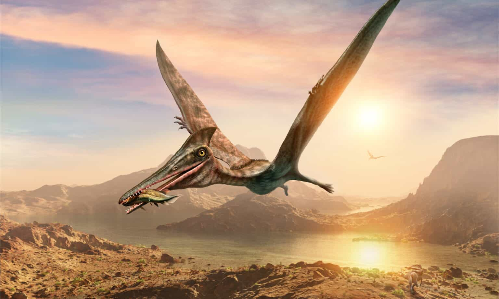Khám phá
Hóa thạch đầu tiên của Pterodactylus được tìm thấy ở Ý vào năm 1784 và nó có niên đại 220 triệu năm tuổi. Một hóa thạch Pterodactylus hoàn chỉnh hoặc gần hoàn chỉnh đã được tìm thấy ở Brazil. Những hóa thạch tương tự cũng được tìm thấy ở Đức và Ý trong suốt nhiều năm.
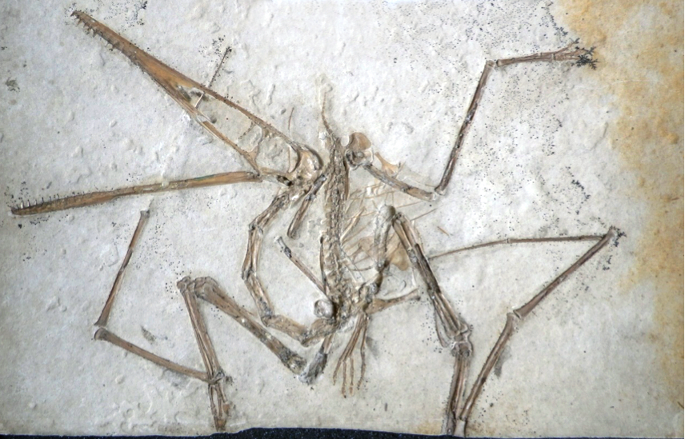Biết bay từ nhỏ
Tiến sĩ David Angwen, nhà cổ sinh vật học tại Đại học Leicester và Tiến sĩ Charles Deming, nhà động vật học tại Đại học Lincoln, đã so sánh hóa thạch của những con Pterodactylus cũng như hóa thạch trứng của chúng được tìm thấy ở Trung Quốc, Argentina với những hóa thạch của họ bò sát cổ đại và chim cho thấy, loài khủng long này hoàn toàn có thể bay ngay khi mới nở.
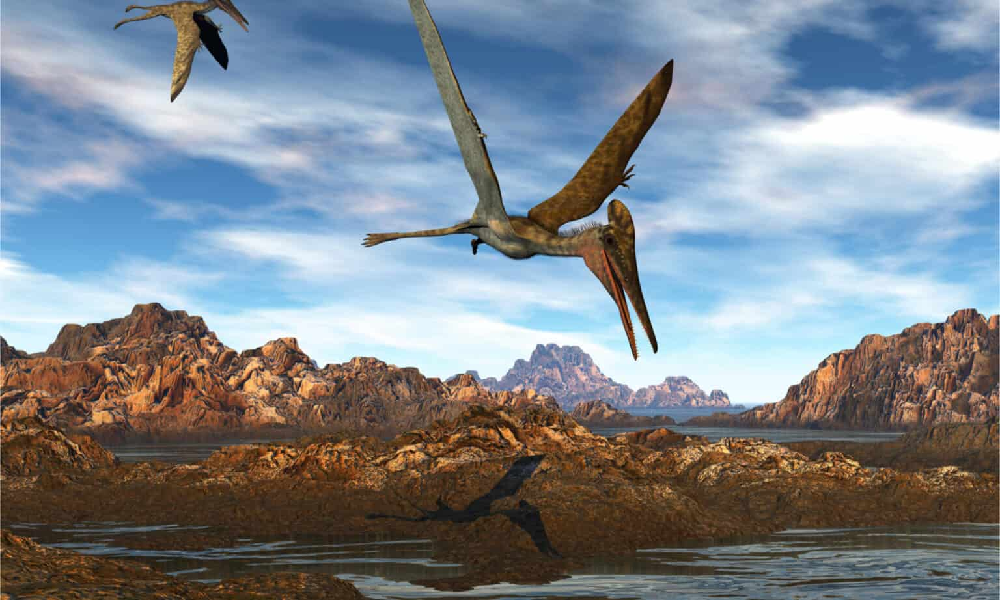Không giống như hầu hết những loài chim và dơi hiện đại, những con khủng long Pterodactylus bố mẹ chỉ có trách nhiệm giao phối và chẳng cần phải chăm sóc hay dạy bay cho những con non vì những con Pterodactylus đã có thể tự bay và săn mồi ngay từ khi mới nở.
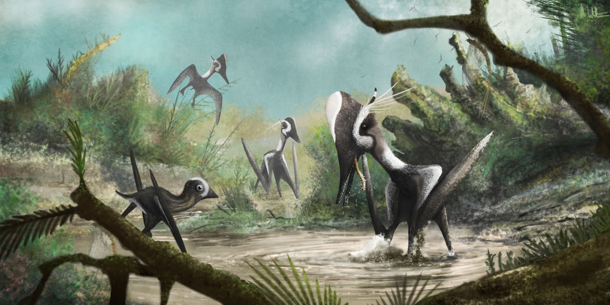